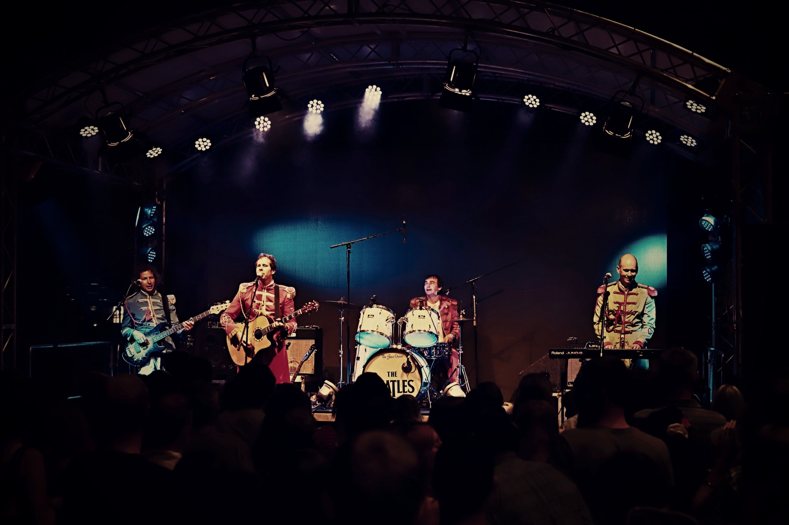

17
DUBEN
2026
PŘÍŠTÍ VYSTOUPENÍ
Big Show na Musilce
KD Musilova 2a, Brno
Začátek
19:30
Nezapomenutelná koncertní show s originálním zvukem 60. let, dobovou aparaturou a více než 100 legendárními hity od She Loves You po Hey Jude.


THE GLASS ONION patří k nejdéle hrajícím a nejvěrnějším revivalům legendárních Beatles v České republice.
Vznikli jsme počátkem roku 1993 v Brně. Za více než tři dekády jsme odehráli stovky koncertů na festivalech, v prestižních klubech, kulturních domech i na soukromých společenských akcích po celé ČR i v zahraničí.
Naším cílem není laciná imitace, ale dokonalý přenos syrové rock’n’rollové energie, proslulých Lennon-McCartneyovských vokálních harmonií a dobového zvuku legendárních nástrojů Epiphone, Viola Bass a aparatur 60. let.
Přijďte zažít neopakovatelnou atmosféru Beatles naživo
KD Musilova 2a, Brno
Zámecký park, Jižní Morava
Pětice muzikantů s láskou k originálnímu odkazu The Beatles

Hudební motor kapely od klavíru po basu. Zajišťuje management a organizaci vystoupení.

Tělem i duší ryzí rocker. Rytmický tep kapely a nezkrotná pódiová energie.

Multiinstrumentalista a hlavní vokální pilíř s bohatou sborovou praxí.

Kytarový virtuos, který do kapely přinesl první beatlesácké nahrávky a autentický vintage tón.

Šedá eminence za mixážním pultem dbající na krystalickou čistotu a sílu zvuku v sále.
Podívejte se na videozáznamy a ochutnejte autentický zvuk

Originální vybavení 60. let a živá atmosféra


Vhodné pro hudební festivaly, městské a pivní slavnosti, divadelní a kulturní sály, firemní plesy i privátní VIP oslavy.